This manual documents the version 1.00 of the firmware - which has been introduced with the Shruthi XT but can also be installed on the classic version of the Shruthi.
Getting started
Overview
The Shruthi comes either in the classic version with only 4 knobs below the screen; or the XT version which provides hands-on controls on all synthesis parameters. The panel of the XT version is divided into 3 sections: oscillators/mixer/filter ; main control ; and modulations (LFOs/envelopes). The main control section is the same on the XT and on the classic versions.
The main control section consist of the following elements:
- The LCD or OLED display shows, most of the time, the name and value of the 4 parameters that can be directly edited with the potentiometers under the screen. When a parameter is modified, the display temporarily shows the full name of the parameter and its value. In some other circumstances, the display might show a confirmation messages, the content of a sequence, etc.
- The clickable encoder can be used to navigate between parameters/pages, or to step through the values of a parameter.
- The four potentiometers below the display modify the synthesis parameters currently displayed on the active page.
- The 8 LEDs provide complementary information about the active page.
- The 6 switches facilitate navigation between pages. The switches S1 to S4 are used to cycle between groups of related pages ; S5 is used to switch between the synthesis pages and the sequencer/system pages ; and S6 is used to bring the load/save page to load and recall presets.
The following connectors are available on the rear panel:
- 1: 2.1mm DC power jack. The Shruthi can be powered with a 7.5V-9V unregulated supply, or with a 9V battery adapter. Make sure that the connector has a center pin (or tip) positive / outer collar (or sleeve) negative pin polarity. Most universal power supplies allows the polarity to be selected -- the polarity being often represented by a diagram like this: - (o +, or by the indication tip: +. The power supply has a reverse polarity protection.
- 2: MIDI in. This input should be connected to the MIDI out port of a sound card, master keyboard, sequencer...
- 3: MIDI out. This output can be used as a MIDI thru, but also to transmit the notes generated by the Shruthi's internal sequencer, backup data, or for polychaining units.
- 4: Line-level, mono audio output.
- 5: Line-level, mono audio input. Note that the external audio signal flows through the VCF and the VCA - you won't hear anything until a note or sequence is played by the Shruthi to "open" the VCA.
In addition to the extra knobs for editing synthesis parameters, the XT additionally features:
- An on/off switch on the back panel.
- A global volume knob.
- A Jam button which holds a note and starts the sequencer/arpeggiator.
Controls and navigation
Pages
The Shruthi parameters are edited by blocks of four (one per potentiometer). A set of four related parameters are grouped together on a page. For example, the Filter page will assign the four following functions to the four potentiometers: filter cutoff, filter resonance, envelope to filter modulation, LFO to filter modulation. The LEDs L1 to L6 display the currently active page. Moreover, the display is constantly showing which knob does what in the current page. For example, if the filter page is active, the display will show:
Cut res env lfo
110 0 10 0
Pages are bundled together in groups, and repeatedly pressing one of the group switches cycles between the different pages in this group. For example, pressing S1 cycles between the oscillator 1 page, the oscillator 2 page, and the mixer page.
Pages are also grouped into two large categories: one category contains all the pages related to sound synthesis -- the ones you'll navigate in when creating a sound -- and another category contains all the pages related to sequencing and to system settings. The switch S5 is used to toggle between the two categories. When the synthesis category is active, the LED on top of S5 is lit. When the sequencer category is active, this LED is not lit. The switches S1, S2, S3 and S4 cycle through different groups of pages as shown on this diagram:
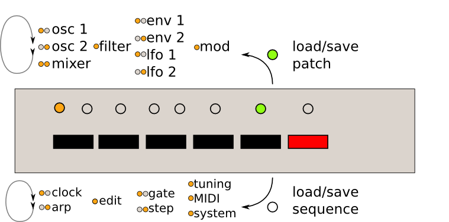
The upper list shows the pages in the synthesis category accessible from each switch, the lower list shows the pages in the sequencer category. L7 indicates which page category is active, and the leds L1-L6 show which page is active.
Here's an example. The Shruthi displays:
Cut res env lfo
110 0 10 0
L7 is lit (synthesis category) and L3 is lit: the filter page is active.
Press S1 to jump into the oscillators group. L1 is lit, and the screen is now displaying:
Sha prm rng sub
saw 0 0 tr1
Press S1 again to move to the next page in the oscillators group. L2 is now lit, the screen is displaying:
Sha prm rng tun
squ 16 -12 12
Now press S5 to switch to the sequencer category. L7 is now off, L1 is lit. The active page is the clock page:
Mod bpm gro amt
stp 120 swi 0
Press S5 again to get back to the synthesis category. L7 is on, and you are back to the oscillator 2 page.
Editing
When a page is active, a summary of the four parameters modified by each potentiometer is displayed on screen. While tweaking a potentiometer, the full parameter name, its value, and the page name, are temporarily displayed on the screen:
filter
cutoff 89
After a short delay, the four parameters page summary is shown again.
On the Shruthi XT, modifying any parameter through the switches or buttons on each side of the central section also brings this temporary display.
Using the encoder.
When the Shruthi is displaying a page summary, the rotary encoder can be used to scroll through the parameters. The name of the active parameter is capitalized. For example, resonance is here the active parameter:
cut Res env lfo
110 0 10 0
Rotate the encoder clockwise to make env the active parameter, rotate the encoder counter-clockwise to make cut the active parameter. If you continue rotating the encoder clockwise for several steps, the next page, env 1, will be shown, and its first parameter, atk, will become selected. Once a parameter is selected, click the encoder to edit it. The encoder is now used to increment/decrement the parameter value. Once the value has been set, click on the encoder again to move back to the 4 parameter summary.
Note that potentiometer and encoder editing can be combined. For example, use a potentiometer to quickly adjust a parameter, and then, while the parameter name is still displayed on the screen, use the encoder to fine-tune it.
A last trick: if you hold S6 while rotating the encoder, it will increment/decrement by 10 instead of 1. This is particularly useful for browsing long lists of patches...
That's all you need to know about the pages/navigation system!
Display status symbols
The Shruthi sometimes flashes a symbol on the first line of the display to signal incoming MIDI messages or the completion of specific commands.
| Symbol | Status |
|---|---|
| (note icon) | A Note On MIDI message has been received |
| (pitch bend lever icon) | A pitch bend message has been received |
| \~ | A control change message has been received |
| ! | The Shruthi is busy accessing memory - this can interrupt sound generation |
| x | The patch has been reset to initial settings |
| ? | The patch has been randomized |
| > | Patch or sequence SysEx data is being sent |
| + | Patch or sequence SysEx data has been successfully received |
| # | The Shruthi has received invalid SysEx data (for example a SysEx message intended for another device) |
Reference
The section describes one by one all the parameters accessible on the synthesis and sequencer pages.
Synthesis
Before digging into the pages details, here is a diagram of the Shruthi signal flow.
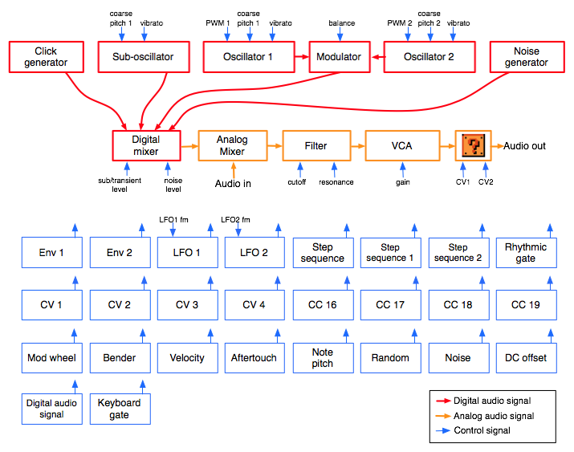
The audio signal flow is represented in red (digital path) and then in orange (analog path):
- The oscillators 1 and 2 generate digital waveforms, which are combined together by the modulator. The default modulator is a balance control over the level of the two oscillators, but more esoteric modulation methods are available.
- The sub-oscillator (which is synchronized in pitch with the oscillator 1, but 1 octave lower) also generates a basic waveform.
- The click generator generates a short transient/click at the beginning of the note. Note that the sub-oscillator and the click generator cannot be used at the same time. It's bassy-beefy or clicky, not both.
- The output of the modulator, the sub-oscillator/click-generator and some additional noise are mixed together. You can adjust the balance of each ingredient.
- The result is converted into a pseudo analog (10 MHz / 1bit) audio signal, and mixed in the analog domain with an external signal coming from the Audio in jack.
- The result is then sent to an analog VCF and VCA, to produce the final audio signal. Some filter boards might offer other signal transformations such as additional filters, effects, distortions...
Each of these modules have parameters (represented by the blue arrows) which can be controlled by any of the modulation sources listed below. However, some connections are already "hardwired" (or rather "softwired" in the firmware):
- The oscillators' pitch always track the note played on the keyboard.
- The filter cutoff frequency always tracks the note. Again, this can be disabled or attenuated by applying a negative modulation from note pitch to cutoff frequency. The rationale behind this choice is that most of the time, you want 1:1 tracking, so this frees up a slot in the modulation matrix for something more interesting!
- Lfo 2 and Envelope 1 are always connected to the filter, their modulation amount being controlled by dedicated parameters on the filter page.
The following routing programmed in the init patch:
| Source | Destination | Amount |
|---|---|---|
| Lfo 1 | Oscillator 1 coarse pitch | 0 |
| Lfo 1 | Oscillator 2 coarse pitch | 0 |
| Lfo 2 | Oscillator 1 PWM | 0 |
| Lfo 2 | Oscillator 2 PWM | 0 |
| Lfo 2 | Oscillators balance | 0 |
| Step sequencer | Oscillators balance | 0 |
| Velocity | Oscillator 1 PWM | 0 |
| Velocity | Oscillator 2 PWM | 0 |
| Envelope 2 | VCA gain | 100% |
| Velocity | VCA gain | 25% |
| Bender | Oscillator 1+2 fine pitch | 2 semitones |
| LFO | Oscillator 1+2 fine pitch (vibrato) | 2 semitones |
Oscillator 1
Sha prm rng sub
saw 0 0 sq1
- sha (shape): Oscillator 1 waveform shape.
- prm (parameter): Oscillator 1 parameter. This changes the timbre of the generated waveform, in a waveform-specific way (see below).
- rng (range): Oscillator 1 pitch, from -24 semitones to 24 semitones (relative the pitch of the MIDI note).
- sub (subosc): Sub-oscillator shape (see below).
The following is a list of all the available waveforms, with some applications and a description of what adjusting the parameter setting actually does.
none: Silence
This simply switches off the oscillator. This might be useful for filtering/gating external signals, or to temporarily mute an oscillator when editing a patch.
saw: Sawtooth
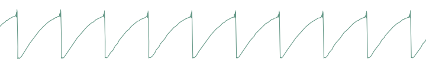
This waveform is perfect for basses and brass sounds. The parameter controls the waveshapping - when its value is increased, an increasingly large section of the waveform is shifted up. Note that this is not intended to be a perfect, drawn with a ruler, sawtooth. It contains a bit of high-pass filtering to make it sound more Juno-y. This waveform is band-limited. Thus, only a limited amount of aliasing artifacts will be heard when playing high-pitched notes.
square: Square wave
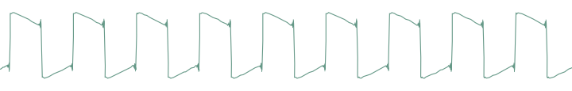
The parameter controls the pulse-width. This waveform is perfect for simulating a clarinet, for basses, "hollow" sounds or Depeche Mode-like leads. Note that this is not intended to be a perfect, drawn with a ruler, square wave. It contains a bit of high-pass filtering to make it sound more Juno-y. This waveform is band-limited and only a limited amount aliasing will be heard when playing high-pitched notes.
Note that there's a slight difference in sound when moving the parameter from 0 to 1. To offer the best sound quality, the pulse width = 50% flavor is read straight from a wavetable at full sample rate, while the pulse width > 50% flavor is obtained from two dephased sawtooth waves, evaluated at half the sample rate. For bass sounds, for which aliasing is not going to be a problem, it is recommended to use pwm instead of square to get a beefier sound.
triang: Triangle
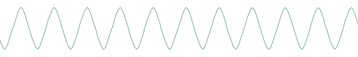
A pure waveform, which serves as a good basis for flute or soundchip-like leads. The parameter controls some kind of waveshapping, clipping the bottom of the waveform. This waveform is band-limited and will still sound fine above C5.
zsaw: Phase-distortion sawtooth with filter sweep
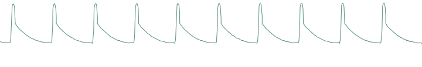
This waveform uses phase distortion to recreate a low-pass filtered sawtooth by progressively "pinching" the phase of a sine wave. The parameter controls the brightness of the sound: from a sine wave to a sawtooth, then from a sawtooth to a sawtooth gone through an ugly transistor amp. Good for dirty bass guitar sounds or clavinets.
zreso: Phase-distortion sawtooth with resonant filter sweep
This waveform uses phase distortion to recreate a sawtooth sent through a low-pass filter with high resonance. The parameter controls the resonance frequency. Useful for doubly-filtered sounds, formants, or anything where its synthetic, cheesy, feel will shine.
ztri: Phase-distortion resonant triangle monster
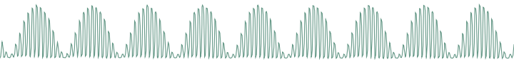
This thing is hard to describe and must be experienced. It sounds like a resonant filter sweep, but has a very hollow, synthetic quality. It may or may not have been in the Casio CZ-101. This waveform is likely to result in whacky sounds, vaguely evoking hardsync.
zpulse: Phase-distortion trapezoidal creature
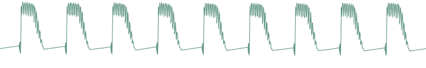
Yet another waveform that makes little sense. When the parameter is set to 0, it sounds like a fat superposition of a square wave and a sawtooth. Sweeping the parameter value progressively increases what sounds like the resonance of an odd, goofily saturated analogue filter.
zsync: Phase-distortion/self-sync trick
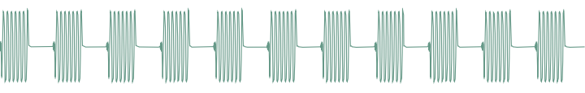
You know the trick: one oscillator playing a low-frequency square wave and another oscillator a higher-frequency sine wave, the first one resetting the phase of the second... and the two of them sent into a ring-modulator! Now roll this into one single sound generator, the parameter of which controls the frequency ratio of the two oscillators: we call it zsync... The resulting sound is close to a Jew's harp or Morsing - band-passey and formantey.
pad: Stack of 4 detuned sawtooth waves
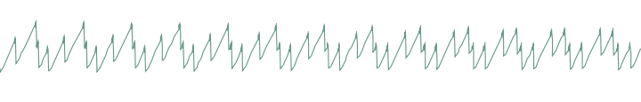
As the name implies, this waveform made of four stacked sawtooth waves is useful for pads (when a copious amount of filtering is applied) or for harsh trance leads. The parameter controls the amount of detuning between the four waves. Note that no bandlimiting is happening here, so this thing doesn't sound quite good above C5... but it's doing a perfect job in the bass range!
fm: Minimal 2-operators FM
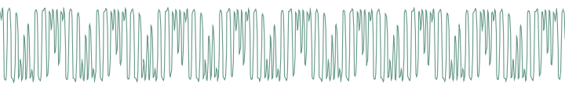
The parameter controls the modulation strength. This oscillator provides the base material for metallic sounds, bells, metallophones, or the next 386 DX hit.
When the fm oscillator is selected, the range parameter plays a slightly different role than usual: instead of controlling the main pitch of the note, it controls the modulator frequency, and has a drastic impact on the timbre.
waves, tampur, digitl, metall, bowed, slap, organ, male: wavetables, wavetables, wavetables!
All these waveforms are wavetables, comprising 16 single-cycle waveforms. The parameter scans the wavetable, smoothly interpolating between each waveform. Some of these tables are "transwaves": the single cycle waveforms were extracted from different "stages" of a sample, and you can somehow recreate the original sample by using an envelope that will sweep the parameter from 0 to 127.
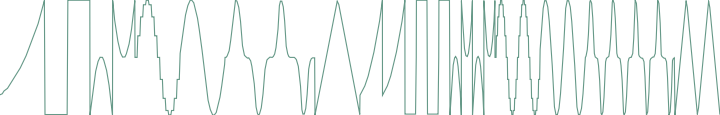
waves are 16 basic waveforms, or rather two series of 8 basic waveforms: waveforms 9-16 are one octave higher.
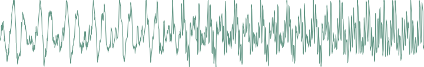
tampur is a transwave extracted from a looped Tampura note.
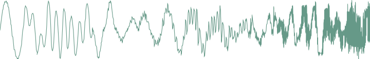
digitl is a PPG-wave classic.
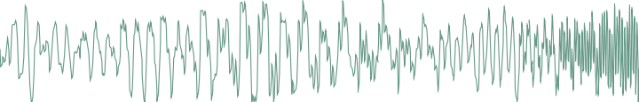
metall is made from single cycle waveforms extracted from classic D50 patches.
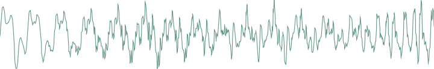
bowed is a transwave extracted from cello sounds.
slap is a transwave extracted from an SQ-80 slap bass patch.
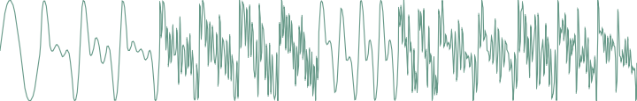
organ contains 16 different mixtures of pure tones, ready for some "Light my fire" action.
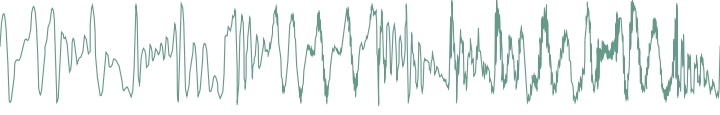
male is another PPG-wave classic, it sounds vaguely like a human male voice.
user: user wavetable
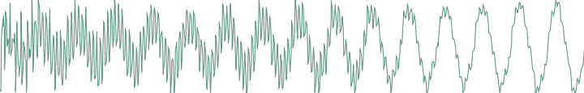
This wavetable has two peculiarities: it is smaller than the other ones (8 single cycle waveforms, each of them being 129 samples long), and it resides in RAM instead of residing in flash ROM. By default, it is loaded with the same content as digitl, but its content can be altered by SysEx messages. You can find here some examples of MIDI files containing user wavetables.
8bits: bitwise anarchy
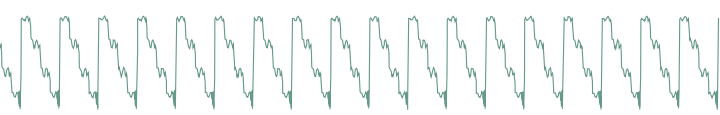
A palette of 8-bits sounding waveforms obtained by applying bitwise operations to a basic sawtooth wave (something now known as "biscuiting").
crush: bit-crushed sine and triangle wave
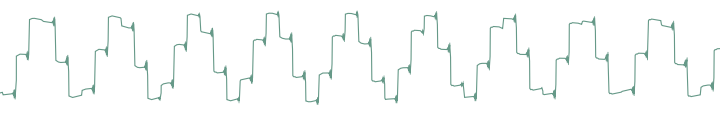
From 0-63, this oscillator will produce a bit-crushed sine wave ; 63 corresponding to the maximum amount of decimation. From 64-127, this will produce a bit-crushed triangle wave, 64 corresponding to the maximum amount of decimation. As a result, the transition from the two waveforms is smooth since the bit-crushing is very heavy when the two ends meet. A parameter value near 120 yields a very typical NES bass sound.
pwm: my first Arduino synth
This waveform is a shamelessly naive square wave. The parameter controls the pulse-width. Contrary to square, this waveform stinks aliasing - but for notes below C2 it is not a real problem: it becomes much more aggressive and "in your face" than square.
noise: Filtered noise generator
The parameter controls the frequency of a simple 1-pole low-pass/high-pass filter in which is sent white noise. From 0 to 63, high-frequency content is progressively added. From 63 to 127, low-frequency content is progressively removed. Perfect as a raw material for percussions or sound effects.
vowel: Low-tech formant synthesis
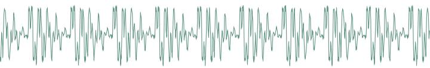
Changing the parameter will sweep between different vocal-like sounds (14 vowels and 2 consonants). Now. Spell. Daftpunk.
Remaining wavetables...
The remaining waveforms are an additional selection of wavetables. Some of them, like cello or vibes, are made of single-cycle waveforms extracted from samples. The others are inspired by some PPG classics!
That's it for the oscillators waveforms. Oscillator 1 is linked to a sub-oscillator / transient generator. The first 6 settings correspond to the sub-oscillator, which is an oscillator of its own, playing always one or two octave lower than the oscillator 1. The next settings disable the sub-oscillator and enable various transient generators, which will produce a short, clicky sound at the beginning of the note:
- sq1 square sub-oscillator, 1 octave below osc. 1
- tr1 triangle sub-oscillator, 1 octave below osc. 1
- pl1 25% pulse sub-oscillator, 1 octave below osc. 1
- sq2 square sub-oscillator, 2 octaves below osc. 1
- tr2 triangle sub-oscillator, 2 octaves below osc. 1
- pl2 25% pulse sub-oscillator, 2 octaves below osc. 1
- click produces a discrete click (more obvious on sine/organ sounds).
- glitch produces a sound similar to that of a skipping CD.
- blow is a burst of noise with a slow attack.
- metal adds a metallic sounding, high-pitched click.
- pop adds a low-pitched discontinuity.
The transient generator can be used for instance to add some punch to metallic-sounding or FM sounds, or for percussive effects.
Oscillator 2
Sha prm rng tun
saw 0 0 0
- sha (shape): Oscillator 2 waveform shape. The available waveforms are the same as for oscillator 1.
- prm (parameter): Oscillator 2 parameter.
- rng (range): Oscillator 2 pitch transposition, from -24 semitones to 24 semitones.
- tun (detune): Fine detuning of Oscillator 2.
Mixer
Op. mix sub noi
sum 32 0 0
- op (operator): Modulation operator (see below).
- mix (osc bal): Oscillator 1&2 balance. Might do something different than balance when an operator different from sum is selected (see the Oscillator 1 section).
- sub (sub osc.): Sub oscillator or transient generator level.
- noi (noise): Noise level.
The operator parameter controls how oscillator 1 and oscillator 2 are blended together. The different modulation modes are:
| Operator | Description | What does the mix parameter do? |
|---|---|---|
| sum | Mixing | Adjusts the oscillator 1&2 balance |
| sync | Mixing and synchronization: oscillator 2's phase is reset whenever oscillator 1's phase is reset. You won't hear the detuning, but instead a timbral modulation | Adjusts the oscillator 1&2 balance |
| ring | Ring modulation - oscillators' signals are scaled and multiplied | Balance between the original sound and the output of the modulator |
| xor | XOR modulation. The bits of oscillator 1 and 2's digital values are exclusive-or'ed, and the result is shifted | Shifts the output, with overflow |
| fuzz | Fuzz. Oscillator 1 and 2 are equally mixed and sent to a waveshapper with a warm tanh response | Fuzz amount |
| >> 4 | Oscillator 1 and 2 are mixed and sent through a dirty 4x sample rate reduction | Oscillator 1&2 balance |
| >> 8 | Oscillator 1 and 2 are mixed and sent through a dirty 8x sample rate reduction | Oscillator 1&2 balance |
| fold | Oscillator 1 and 2 are mixed and sent through a foldback distortion | Distortion amount |
| bits | Oscillator 1 and 2 are mixed and sent through a bit depth reducer | Bit depth reduction amount |
| duo | Duophony | Adjusts the oscillator 1&2 balance |
| 2steps | Oscillator 1 / 2 cycling | - |
| 4steps | Sound source cycling | - |
| 8steps | Sound source cycling | - |
| seqmix | Sound source cycling | - |
A few words about the last fancy modulation modes...
In duophony mode, you can play two-note chords (or bass + melody). The first note of the chord will be assigned to oscillator 1, and the second note will be assigned to oscillator 2, like on the ARP Odyssey or the Polivoks. This works best when mix is set to 32 and when oscillator 1 and 2 are set to the same settings (otherwise small differences in timing can result in drastic changes as both notes of the chord will be assigned to different oscillators). If you play more than 2 notes, the least recently played note will be assigned to oscillator 2, the most recently played note to oscillator 1 ; and the other notes are ignored. The sub-oscillator follows the least recently played note. Note that the Shruthi is by design a monosynth, with one set of envelopes & LFOs, and one filter / VCA - both notes will go through the same filter and have the same envelope, resulting in a kind of weird paraphonic effect. Don't be surprised if you encounter pitch jumps, envelope clicks, weird voicing, or if things do not sound and feel as good as on a polysynth - all these are due to stubbornly trying to fit duophony into an essentially monophonic design. Ironically, the duophony mode works best with the arpeggiator - it will move through the chord in pairs of notes. Try it!
In 2steps mode, oscillator 1 and oscillator 2 are alternatively on and off at each new note.
In 4steps mode, oscillator 1, oscillator 2, the sub oscillator and the noise source are alternatively on and off at each new note. The first note you play is played by the sub-oscillator ; the second note by oscillator 1 ; the third by the noise source ; the fourth by oscillator 2. Try this with the arpeggiator and you get a mini drum pattern! 8steps does the same thing, but with a more complex cha-cha rhythmic pattern.
Finally, in seqmix mode, the on/off status of the oscillators / sub / noise is controlled by the values in the step sequencer. 1 = osc 1 ; 2 = osc 2 ; 4 = sub ; 8 = noise ; and these values can be added up for combinations (osc 1 + noise = 1 + 8 = 9). The following table enumerates all combinations:
| Step sequencer value | Osc 1 | Osc 2 | Sub | Noise |
|---|---|---|---|---|
| 0 | - | - | - | - |
| 1 | X | - | - | - |
| 2 | - | X | - | - |
| 3 | X | X | - | - |
| 4 | - | - | X | - |
| 5 | X | - | X | - |
| 6 | - | X | X | - |
| 7 | X | X | X | - |
| 8 | - | - | - | X |
| 9 | X | - | - | X |
| a | - | X | - | X |
| b | X | X | - | X |
| c | - | - | X | X |
| d | X | - | X | X |
| e | - | X | X | X |
| f | X | X | X | X |
You can thus use this mode for programming simple drum patterns in the step sequencer - using the sub oscillator as a bass drum and the noise as a snare drum, and interweaving notes from the oscillators between the drum notes.
Filter
Cut res env lfo
66 0 16 37
- cut (cutoff): Filter cutoff frequency.
- res (resonance): Filter resonance.
- env (env1->vcf): Modulation amount from envelope 1 to VCF. If you want to set a negative modulation amount, you can patch env1 to the VCF in the modulations section and ignore this parameter.
- lfo (lfo2->vcf): Modulation amount from LFO 2 to VCF. Again, if you want to set a negative modulation amount, you can patch the LFO 2 to the VCF in the modulations section and ignore this parameter.
Note that a second page of filter settings might be available if a special filter board is used - for example, the dual multimode filter board has a second menu with the cutoff/resonance of the second filter, or the filter mode settings. Please refer to the documentation specific to each filter board!
Envelope 1 / 2
Atk dec sus rel
0 44 20 60
- atk (attack): Envelope attack time.
- dec (decay): Envelope decay time.
- sus (sustain): Envelope sustain level.
- rel (release): Envelope release time.
Note that the envelopes are not linear, but have a moderate exponential slope for snappier action.
LFO 1 / 2
Sha rat atk mod
tri 52 0 fre
- sha (shape): LFO waveform. The available LFO waveforms are: triangle, square, sample&hold, ramp (sawtooth), step (cycles through the sequence of values programmed in the step sequencer). 16 additional waveforms named \~1 to \~16 are also available. They are directly taken from one of the wavetables, are intended to be used with slow frequencies, and are very good at mimicking the sounds of machines or... human organs.
- rat (rate): LFO rate.
- atk (attack): LFO rise time. When this setting is non-zero, the LFO will take some amount of time to reach its maximum amplitude
- mod: LFO synchronization mode: when set to free, the LFO is free-running. When set to slave, the phase of the LFO is reset every time a new note is played. When set to master, the LFO will retrigger the envelope (LFO 1 retriggers envelope 1 and LFO 2 envelope 2). Finally, when set to 1 shot the LFO will turn into a single-cycle envelope triggered on every key press.
Among the choices of LFO rates, the first values, which are prefixed by a "x", are tempo-synchronized settings. The number following the X corresponds to the number of sequencer steps that will be used to set up the LFO period: x16 simply means that the LFO will go through one cycle over the duration of 16 sequencer steps (4 beats). For example, if you set the LFO to a ramp, with a rate of x4, and map it to the cutoff, the cutoff will raise over the duration of a beat and return to a low value at the beginning of each beat. With a x2 or x1 rate, square LFO mapped to the VCA, you can get old-school trancey gater effects. With a x2 rate, sample&hold LFO mapped to the cutoff and the basic arpeggiator pattern, with high resonance, you get a random bleeping at every note.
Modulation matrix
In this page, the routing between the modulation sources and destinations is configured. The first important thing about this page is that it works a bit differently from the others: the potentiometer P1 is used to select a patchcord, while P2, P3 and P4 are used to edit it.
Here is an example:
Mod src dst amt
1 lf1 ~1 0
This page means: "The patchcord #1 connects the LFO1 to the oscillator 1 pitch, and the corresponding modulation amount is set to 0". By turning the first knob, you can scroll through the different connections in place, for example:
mod src dst amt
9 en2 vca 63
"The patchcord #9 connects the envelope 2 to the VCA gain, and the corresponding modulation amount is 63".
Once a patchcord is selected with the first knob, the source/destination/amount are edited with the 3 other knobs. Note that you can see in details the source and destination when tweaking one of those parameters:
mod en>vca
amount 62
When editing modulations, L6 blinks/is dimmed to reflect the value of the selected modulation source.
The modulation sources are, in modern lovers precise order:
- lfo1, lfo2: LFO output (centered).
- stpseq: Step sequencer output.
- stpsq1: Step sequencer's little brother 1: it cycles on the first 8 steps of the sequence.
- stpsq2: Step sequencer's little brother 2: it cycles on the last 8 steps of the sequence.
- arp: Rhythmic gate signal, which outputs a high value when the arpeggiator or sequencer contains a note at the current step, or 0 when there is no note.
- mwheel: Modulation wheel value read from the MIDI input.
- afttch: Aftertouch value read from the MIDI input.
- bender: Pitch-bend controller value read from the MIDI input (centered).
- offset: A boring constant value. This is useful if you want to output a fixed value to one of the CV outs.
- cv1, cv2, cv3, cv4: Control voltages read from the CV input pins. By default, the input pins are floating, so it's likely that these modulation sources will sound just like noise. These modulation sources do nothing on the Shruthi XT (which does not have extra CV pads).
- cc A, cc B, cc C, cc D: Value of the Control Change 16, 17, 18 and 19.
- noise: Another noise generator! Mapped to the VCA, makes for some super snares!
- env1, env2: Envelopes.
- velo: Note velocity.
- random: A random value updated every time a new note is played.
- note: Pitch of the currently played note (centered).
- gate: Keyboard gate signal, null when no key is currently pressed.
- audio: Digital audio signal produced by the mixer. Please note that since the modulation matrix is recomputed at 976Hz, some serious aliasing is happening here. You're not going to do FM with this thing, most of the time it sounds like crap, but it's something fun to experiment with!
- op. 1: Operator 1.
- op. 2: Operator 2.
The modulation destinations are, in modern lovers precise order:
- pwm1: Oscillator 1 parameter (can be pulse width, but also waveshapping, phoneme, etc. depending on the oscillator type).
- pwm2: Oscillator 2 parameter (can be pulse width, but also waveshapping, phoneme, etc. depending on the oscillator type).
- osc1: Coarse oscillator 1 pitch, in a -16 / 16 semitones range. Also affects the sub-oscillator's pitch.
- osc2: Coarse oscillator 2 pitch, in a -16 / 16 semitones range..
- osc1+osc2: Coupled oscillator 1+2 pitch, in a -4 / 4 semitones range. Also affects the sub-oscillator's pitch.
- fine: Fine oscillator 1+2 pitch, in a -1 / 1 semitones range. Also affects the sub-oscillator's pitch.
- mix: Oscillator 1&2 balance (or whatever the modulator does with the balance parameter).
- noise: Noise volume.
- subosc: Sub-oscillator volume.
- cutoff: Filter cutoff.
- reso: Filter resonance.
- vca: VCA gain. 13 cv1, cv2: Control signal for the CV output #1 and #2. When a special filter board is used, this controls a parameter of an additional sound processing unit, such as a secondary filter, a delay, etc. Please refer to the documentation specific to each filter board!
- attack: Envelope 1 and 2 attack speed. For example, map velocity to this modulation destination to have a faster attack time on notes played with a high velocity.
- tr11, a1, d1, s1, r1: Envelope 1 trigger, attack, decay, sustain, release.
- tr12, a2, d2, s2, r2: Envelope 2 trigger, attack, decay, sustain, release.
- atk: Envelope 1 & 2 attack time.
- lfo1, lfo2: Frequency modulation of the two LFOs.
One thing that requires a bit of clarification is the notion of "centered" modulation source. Let's take an example. We have a triangle LFO mapped to the filter cutoff, with a modulation amount of 30. If the cutoff is set to 80, the actual value of the cutoff will oscillate between 50 (80-30) and 110 (80+30). On the other hand, if we have an envelope mapped to the cutoff with a modulation amount of 20, the cutoff will go from 80 to 120 (80 + 2 * 20), then down to 80 after the release. This is something to remember if you want to do PWM, for example. If you set the PWM modulation amount to 40, you also have to set the oscillator pulse width value to 40, so it will oscillates between 40-40 = 0 and 40+40=80. Otherwise, it will spend half of the time stuck at 0. But this makes things nicer for vibrato, tremolo, wah-wah or growl effects!
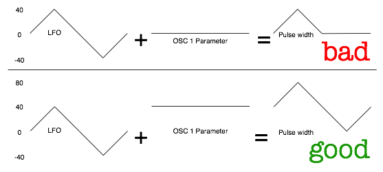
Quirk ahoy! The modulation amount of the last patch cord is adjusted by the modwheel. Huh? Let's say you set patch cord 12 to go from LFO 1 to the oscillators fine pitch with an amount of 16:
Mod src dst amt
12 lf1 ~ 16
This modulation will be applied with an amount proportional to the modwheel position - by default it won't be active until you start moving the modulation wheel, and to get it at full strength, you'll have to push the modulation wheel to the max.
Operators
Press the modulation matrix button twice to bring the operators page. In this page, you can configure the two "operators". An operator takes 2 modulation sources, applies a fancy (or not) mathematical operation on them, and the result is made available as a new modulation source in the modulation matrix.
Op. in1 in2 out
1 lf1 lf2 add
Use the first setting (op.) to select which operator to modify. The second and third options allows you to select which modulation destination you want to operate on. The last setting is the operation to apply:
- add adds the values of two modulation sources.
- prd computes the product of the two modulation sources.
- max takes the maximum of the two sources.
- min takes the minimum of the two sources.
- xor totally messes up the two sources.
- [=]{style="text-align:right;"} outputs a large value if source 1 is above soure 2, 0 otherwise.
- [=]{style="text-align:left;"} outputs a large value if source 1 is below soure 2, 0 otherwise.
- qtz source 1 is quantized into a number of values set up by source 2.
- lag source 1 is low-pass filtered, with a cutoff frequency set up by source 2.
There are plenty of things to experiment with... Create a multi-stage envelope by taking the max of envelope 1 and 2 ; mask a LFO by the step sequencer ; build a chaotic LFO using feedback and xor modulation between the two LFOs ; Square the value of a LFO to change its shape...
Here is a more precise example showing how to low-pass filter a square LFO to create a "soft" modulation source routed to the filter. First, route the operator 1 output to the filter cutoff:
Mod src dst amt
1 op1 cut 63
Then, specify that operator 1 is LFO1 transformed by a "lag processor".
Op. in1 in2 out
1 lf1 =4 lag
The in2 is the filtering cutoff frequency. You can try setting this to velocity too: the harder the note is pressed, the harder the edges of the LFO are!
Here is another example showing how to quantize an envelope to create a low-fi "steppy" modulation. First, route the operator 1 output to the filter cutoff:
Mod src dst amt
1 op1 cut 63
Then, specify that operator 1 is a quantized version of the envelope 1:
Op. in1 in2 out
1 en1 =4 qtz
Sequencer and arpeggiator
Before going further, let's get things straight: the Shruthi sequencer has little in common with the sequencer of, say, a TB-303: it is not intended to be a "press play and let it do all the work" thing. Indeed, there's no "play" button on the Shruthi! You have to think of it as an arpeggiator-like tool - something to help create complex riffs and patterns with limited keyboard action.
Sequencer mode and clock
Mod bpm gro amt
stp 120 swi 0
- mod (mode): Sequencer/arpeggiator mode. This deserves some generous amount of explanations, please read further!
- bpm (bpm): Arpeggiator/step sequencer/LFOs tempo in BPM. extern will sync the Shruthi clock to the ticks received from the MIDI input.
- gro (groove): groove template. The options are swing (uneven distribution of pairs of 1/8th notes), shuffle (uneven distribution of pairs of 1/16th notes), push (push the beat), lag (sloppy drummer!), human (humanization) and monkey (humanization + shuffle). This setting only has an effect when amt is set to a non-zero value. The swing is only applied to the internal clock - not when the Shruthi is slaved to an external MIDI clock.
- amt (amount): amount of groove to apply.
Now let's dig into the sequencer modes...
stp: step sequencer only
When stp is selected, the arpeggiator and pattern sequencer are disabled. The only pulsating, modulating things running are the LFOs and the step sequencer.
arp: arpeggiator
When arp is selected, the chords played on the keyboard are arpeggiated. Releasing the keys for a short amount of time stops the arpeggio but keeps the clock ticking. Releasing the keys for a duration greater than that of a bar stops the arpeggio and resets the clock -- it will restart from the first beat once a chord will be played.
seq: pattern player
In this mode, the pattern programmed in the sequencer is triggered by playing a note on the keyboard. Depending on the note you play, the pattern is transposed: play C4 to play the pattern as recorded, C#4 to play it one semi-tone higher, B3 to play it one semi-tone lower, etc. The pattern will stop whenever the key is released -- but the clock will continue ticking for the duration of a bar - and if a key is pressed during this interval, the pattern will resume in time. This mode is most useful for playing and transposing a bassline.
Arpeggiator
Dir rng pat div
? 1 0 /16
- dir (direction): Arpeggiator direction. The options are up, down, up/down, random, and "as played".
- rng (range): Arpeggiator range, in octaves, from 1 to 4.
- pat (pattern): Arpeggiator rhythmic pattern. 15 patterns are available (see the chart below). The last option in the list, sequence uses the rhythmic pattern programmed in the sequencer.
- div (division): This option modifies on which subdivison of the internal or external MIDI clock the arpeggiator and sequencer are aligned.
Arpeggiator patterns
1: o o o o o o o o
2: ooo ooo ooo ooo
3: o o ooooo o oooo
4: o o oo oo o oo o
5: oooo oo oooo oo
6: o o o o
7: o o o o o o
8: o o o o o o
9: o o o o o o
10: oo oo oooo oo oo
11: ooooo oo oo ooo
12: o o o o o o
13: o oo o o o oo
14: o oooooo oo
15: o o o oo
Pattern editor
The pattern editor page is very different from the other pages. Here is how it looks like:
|00| C3 - 7 0 |
>|01| C3 - 7 0 |
It contains 5 columns, showing, from left to right:
- The step number
- The note at this step
- The rhythmic event at this step: note (represented by a note icon), tie/slide (represented by a -- sign), or rest (empty)
- The velocity (applies only to steps with a note)
- The step sequencer/controller value at this step, from 0 to 15 (values from 10 to 15 are represented by the letters a to f)
The pattern can be edited with the potentiometers. P1 scrolls through the steps, P2 changes the note at the current step. P3 changes the rhythmic event and velocity value at the current step. Finally, P4 modifies the controller value.
The encoder can be used to scroll through the steps. Clicking the encoder enters the edit mode: a blinking cursor is shown, and the encoder is now used to increase/decrease the note value. Clicking the encoder again leaves the edit mode.
While in edit mode, pressing a key on the MIDI keyboard will record the note number at the current step, and move to the next step. This can be seen as a naive "step by step recording" mode, which can be used while a sequence is playing.
Three important notes:
- The pattern length is by default 16 steps, but this can be changed on the Rhythmic sequencer or Step sequencer pages.
- The note sequence, rhythmic pattern, and controller (steps) sequence all have the same length.
- The step sequence (controller values) have an effect only when the step sequencer is routed to a modulation destination in the modulation matrix!
Rhythmic sequencer
This page shows, on a single screen, the rhythmic content of the bar programmed in the pattern editor. It is particularly useful when programming a rhythmic pattern for the arpeggiator - a task for which the only information that really matter are the note velocities and rhythmic events.
The first line of the screen shows the rhythmic events, the second line the programmed velocities:
xxx x x x---x---
777 7 6 54443111
Use P2 to move the cursor, P3 to change the rhythmic event/velocity at the selected step, and P4 to adjust the pattern duration. The encoder can be used for editing too: select a step, click, edit the step value, and click again when done.
Step sequencer
This page shows a different view of the controller values programmed in the pattern editor.
step sequencer
0000ffffcccc4444
Use P2 to move the cursor, P3 to change the controller value at the selected step, and P4 to adjust the pattern duration. The encoder can be used for editing too: select a step, click, edit the step value, and click again when done.
P1 can also be used to shift and cycle the sequence.
Tuning settings
Oct rag prt leg
0 equ 0 off
- oct (octave): Transpose every note by -2, -1, 0, 1 or 2 octaves.
- rag (raga): Scale/keyboard mapping.
- prt (portamento): Portamento time.
- leg (legato): Legato on/off. This option specifies how the Shruthi will interpret overlapping notes. When legato is off, the envelope retriggers every time a new note is played, and the portamento is always applied. When legato is on, the envelope retriggers only when the new note does not overlap with the previous one, and the portamento triggers only on overlapping notes.
The different scales/keyboard mappings are:
| Name | Description |
|---|---|
| equal | Equal temperament |
| just | Just intonation (frequency ratios to C are rational numbers) |
| pythagorean | Pythagorean scale |
| 1/4 eb | E and B are 1/4 tone lower |
| 1/4 e | E is 1/4 tone lower |
| 1/4 ea | E and A are 1/4 tone lower |
| bhaira ... rasia | A bunch of ragas of the Maihar gharana . Note that it is not possible to play notes outside of the raga - if you attempt to do so, the previously played note will be retriggered. The suggested mode of operation is to find out which keys are active in the raga, and improvise with them! |
Master tune and MIDI settings
Tun chn mid
0 1 ful
- tun (tune): Master tuning in the -1/+1 semitone range.
- chn (midi chan): MIDI channel the Shruthi is tuned to. Use 0 to receive on all channels.
- mid (midi out): Data sent to the MIDI out. Refer to this paragraph from the MIDI implementation section.
System settings
Pau sna fil sta
8 off lpf spl
- pau (pause): Duration (in increments of 0.128 seconds) during which the long parameter name and value is shown on screen when a potentiometer is adjusted. When set to 0, the screen always shows the four parameters summary. This setting can also be used to enable a screen-saver: select one of the options prefixed by 's', and the display of the Shruthi will go blank after a few minutes of inactivity. This extends the life of OLED displays (but has no impact on LCD displays!).
- sna (snap): Enables potentiometers' "snap" mode. This mode makes it less likely to accidentally change a parameter value when switching pages. Suppose you're tweaking the filter resonance with P2 -- you rotate it all the way down to 0. Then you switch to the oscillator 1 page to adjust the oscillator 2 parameter. If the current value of the parameter is set to 64, you'll hear a discontinuity, since the value of the parameter will instantly jump to 0 or 1 when you start touching the pot. When snap is on, things will happen differently: rotating the pot will have no effect until the position of the pot actually reflects the current value of the parameter. After that, the parameter value will track the potentiometer's position. Another way to explain it: when snap is on you have to move the pot to "grab" the current parameter value before the parameter is modified.
- fil (filter): Enables software extensions for a specific filter board. The default, lpf must be selected for the SMR4 filter board. ssm must be selected for the legacy SSM2044 filter board. svf is for the dual SVF filter board, dsp the digital filter, pvk the Polivoks filter board, and dly the LP2+delay filter board.
- sta (startpage): Selects on which page the Shruthi boots (splash screen, filter page, preset load/save page).
The load/save page
The Shruthi can save in persistent memory the following data:
- Patches (16 in internal memory, up to 464 on the external eeprom chip). A patch includes all synthesis parameters and the sequencer/arpeggiator data; at the exception of the tempo/clock settings and the system settings such as MIDI channel, transposition, etc.
- Global settings (in internal memory).
To load/save a patch, press S6 from any of the synthesis/sequencer editing pages.
To load/save global settings, press S6 from the tuning/MIDI settings pages, or from the system settings page.
Patch load/save page
browse :patch
1 init
The first line shows the action being performed (load, save, or compare). The second line shows the program number and its name.
Browsing the patch library
Rotate the encoder to browse through the patches. Click the encoder to temporarily revert to the patch which was being edited before entering the load/save page: browse is replaced by compare on the screen. Click the encoder again to resume browsing patches.
The Shruthi sends a MIDI program change message whenever a new patch is loaded.
Note that when attempting to load a patch while a sequence or arpeggio is currently playing, the sequencer/arpeggiator settings stored with the patch are not loaded. This allows you to listen how different patches sound while keeping your sequence/arpeggio running.
Saving
When the browse page is displayed, press S6 again to jump to the save page. A blinking cursor is shown in front of the patch number:
save :patch
_1 init ok
- Click and rotate the encoder to select the program number. Click again when done.
- Rotate the encoder to move the cursor to a letter of the patch name you want to modify. Click and rotate the encoder to change the letter. Click again when done.
- Once the patch number and patch name have been set, move the cursor to the ok button. When selected, it will appear in brackets []{lang="ok"}. Click the encoder to confirm... The patch is saved!
To cancel and leave the save page, press any other switch.
Special functions
While the browse page is displayed, hold S6 and press:
- S1 to revert the current patch to init.
- S2 to program random values into all the parameters of the current patch.
- S3 to dump the current patch to the MIDI output as a SysEx block.
- S4 to bring up the global backup page.
Global settings save page
The default values of global settings such as octave transposition, MIDI channel, MIDI out mode, etc. are read from internal memory every time the Shruthi boots up. To use the current settings as default settings, press S6 while one of the tuning, MIDI or system settings pages are displayed. The display will show the following confirmation message:
save midi/kbd
settings? no
Leds L1, L3, L5 and L7 will be lit. Rotate the encoder until ok is displayed instead of no. Click the encoder to confirm.
Global backup by SysEx
The global backup function is accessible by holding S6 and S4 together from the sequence or patch load pages. A confirmation message is displayed:
start full midi
backup? no
Leds L1, L3, L5 and L7 will be lit. Rotate the encoder until ok is displayed instead of no. Click the encoder to confirm. The entire content of the Shruthi patch and sequence memory will be sent as a sequence of SysEx messages.
Miscellaneous
Latch
While a note (in stp mode), arpeggio (in arp mode) or sequence (in seq mode) is playing, the encoder can be pressed for one second to latch the note. Dashes are shown on the display to indicate that the latch mode is active - for example:
Mod-bpm-gro-amt
stp 120 swi 0
Note off messages will be ignored. To leave the latch mode, press the encoder for one second. This will not immediately stop the arpeggiator/sequencer to give you some time to get back into action on the keyboard!
Jam mode
The Jam mode allows notes to be played, or sequences/arpeggios to be started and transposed without any external MIDI controller.
On the Shruthi XT, the Jam mode is triggered with a dedicated button on the top-right section of the panel. The Jam mode can also be accessed by keeping the encoder pressed for one second while no note/arpeggio/sequence is playing.
A note is played and held immediately when entering the Jam Mode. Turn the encoder to transpose it by semitone increments. Use the 4 main knobs to transpose it by octaves, along a pentatonic scale, or along two unusual scales.
It is still possible to navigate to other pages and to tweak other parameters while the Jam mode is active. In this case, pressing the Jam button or holding the encoder will simply bring back the Jam mode page (root note selection).
Pressing the Jam button / holding the encoder while the Jam Mode is active and the Jam mode page is shown will stop the sequencer/arpggio/note.
Hardware selection
The Shruthi firmware can run on 3 versions of the hardware:
- "Classic" version with 4 knobs.
- "XT classic" - original design by fcd72.
- "XT" - with aluminum panel, sold as a kit.
The kits are sold with chips already configured for the correct version of the hardware. However, you might face the situation in which a chip configured for one version of the Shruthi is inserted into another version.
This might lead to unexpected behavior such as flickering values on the screen, or buttons not correctly reacting to presses. To configure the correct version of the hardware, power the Shruthi on with the encoder pressed. The screen displays which version of the hardware is currently active. Repeat the procedure until the correct version is displayed.
MIDI
MIDI out modes
The Shruthi can be used in a variety of MIDI configurations. In particular, different functions can be assigned to the MIDI out port, through the midi out option of the midi settings page.
off
The MIDI out port is disabled. This settings brings a tiny, tiny improvement in responsivity to the MIDI input and to knob movements, since no MIDI out means less work for the CPU.
thru
The MIDI out port outputs verbatim what was received on the MIDI input (soft-thru). This setting is not very CPU intensive, since no reformatting of the MIDI stream is done.
seq
The MIDI out port outputs only the note on and note off events processed by the synthesizer -- be they generated by the internal sequencer and arpeggiator, or received by MIDI.
ctrl
The MIDI out port outputs only NRPN and CC messages capturing knobs tweaking. This mode is ideal for using the Shruthi with both its IN/OUT ports connected to the same device. The other modes are not suitable for operation in this configuration since they can cause unwanted MIDI loops.
full
In this mode, every incoming message is forwarded to the Midi output. In addition, NRPNs and CC messages capturing the knob movements are inserted into the MIDI stream and written to the MIDI out. These messages can be used to record knob movements in a sequencer, or to synchronize 2 Shruthi in Unison mode.
polychaining
In this mode, several Shruthi units chained together by MIDI can behave like a polysynth. Each unit will implement a "distributed voice-stealing" scheme, in which they will either play a note, or forward it to the chain. To this purpose, each unit must be aware of the number of units that will follow in the chain. This is done through one of the 8 polychaining settings: 1>| indicate that this unit is at the end of the chain, 2>1 indicates that this unit is followed by one unit, 3>2 indicates that this unit is followed by 2 units, etc.
Here's an example of configuration to turn 3 Shruthi units into a triphonic synth:
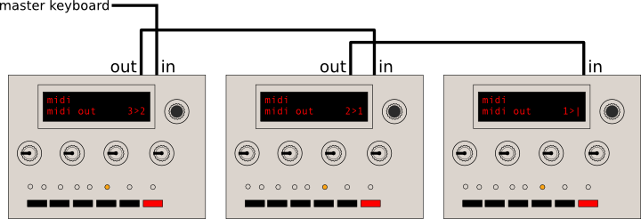
The 3 units obviously have to be sent to a common audio mixer or sound card.
Some caveats regarding the polychaining mode:
- The arpeggiator and sequencer do not work in polychaining mode ; and the LFOs of each unit won't be synchronized with each other
- There is a latency of up to 2ms between each unit. Thus, this feature works best on small chains.
- Any parameter change done on the first unit in the chain is forwarded downstream, so tweaking is possible (and encouraged). Furthermore, when a patch is loaded on the master unit, it is dumped as a SysEx to each unit of the chain for synchronization purposes. However, this doesn't work the other way round: if you tweak a parameter or reload a new patch on the last unit in the chain, the other units upstream won't be aware of it!
Updating the Shruthi firmware by MIDI
To update the Shruthi firmware, hold the S6 switch (or the OSC 2 SHAPE + switch on the XT) while the synth is being powered on.
The screen remains empty, and the LEDs L1, L3, L5 and L7 are lit. The Shruthi is now waiting for SysEx data containing firmware update commands.
This data is compiled into a MIDI file you can download on the Mutable Instruments website. During the firmware update procedure, the LEDs will light up one by one - the last LED being lit will also blink as the data is received. The update takes about 1 minute. If something goes wrong during the update procedure, the Shruthi is not bricked: it is possible to restart it with S6 held down, to retry the update procedure.
If you want to use a dedicated SysEx transfer tool, we recommend Elektron's C6 tool available for both Windows and OS X, with the following timing settings:


MIDI implementation
A standard MIDI implementation chart can be viewed here.
Received messages
Note on/off (0x80 and 0x90), aftertouch (0xa0, 0xd0) and pitch-bend (0xe0)
Note that the aftertouch is always global, and that its effect depends on the patching of the afttch modulation source in the modulation matrix (by default, none).
Program change (0xc0)
This loads a patch from the internal or external memory. You can use the bank MSB CC (0x00) to load patches above 127. Note that the patch numbers shown in the load/save page are numbered from 1, but the MIDI patch numbers are numbered from 0, so the first patch is loaded with program change 0 even if it appears to be #1 on the load/save page.
Control changes (0xb0)
The Shruthi responds to the following system control change messages:
- All sound off (0x78)
- Reset all controllers (0x79)
- All notes off (0x7b)
- Omni on/off (0x7c, 0x7d)
- Hold pedal (0x40)
Most synthesis parameters are accessible by non-standard control changes or NRPNs. Please refer to the Parameters accessible by MIDI section.
Clock tick (0xf8)
This advances the system clock when the bpm setting is set to external or one of its multiples.
Play and stop (0xfa and 0xfc)
The Play message must be sent to activate the LFO, arpeggiator or sequencer when the bpm setting is set to external. The Stop message kills all notes and stops the sequencer or arpeggiator.
System exclusive messages (0xf0).
The Shruthi sends or receives System Exclusive messages for the following operations:
- Patch data dump
- Sequence data dump
- Wavetable dump
- Bulk memory dump
- Firmware update
- Post firmware-update reset
Please refer to the SysEx data format section for more information.
Synthesis parameters accessible by MIDI.
Most of the synthesis parameters are accessible by NRPN or CC.
Editing a parameter by CC is fool-proof: send any value between 0 and 127, and it will mapped to the range of the parameter. For example, when adjusting the oscillator 1 range, the value 0 will be mapped to -24, and the value 127 will be mapped to +24. There is a bit of resolution loss for parameters with a large range (eg: tempo).
This is not the case when using NRPN: in this case, the value in the data entry message will need to be exactly the requested value (no scaling occurs). Since most parameters have their range in a subset of 0--127, only a data entry LSB message has to be sent. When the maximum value of the parameter exceeds 127, or when it accepts negative values, a data entry MSB will have to be sent. Negative values are represented using 2's complement. For example, the MIDI messages to send to set the Oscillator 1 range to -12:
176 99 0 (NRPN MSB set to 0)
176 98 2 (NRPN LSB set to 2, from the table below: Oscillator 1 range)
176 6 1 (Data Entry MSB set to 1 -- value above 127 or negative)
176 38 116 (Data Entry LSB set to 116, because 116 - 128 = -12)
The following table summarizes all the synthesis parameters, with their NRPN and CC numbers:
| Parameter number | Range | NRPN number | CC number |
|---|---|---|---|
| Oscillator 1 shape | 0-34 | 0 | 20 |
| Oscillator 1 parameter | 0-127 | 1 | 21 |
| Oscillator 1 range | -24-24 | 2 | 22 |
| Modulation operator | 0-13 | 3 | 28 |
| Oscillator 2 shape | 0-34 | 4 | 24 |
| Oscillator 2 parameter | 0-127 | 5 | 25 |
| Oscillator 2 range | -24-24 | 6 | 26 |
| Oscillator 2 detune | 0-127 | 7 | 27 |
| Oscillator balance | 0-63 | 8 | 29 |
| Sub oscillator volume | 0-63 | 9 | 30 |
| Noise volume | 0-63 | 10 | 31 |
| Sub oscillator/transient generator shape | 0-10 | 11 | 23 |
| Filter cutoff | 0-127 | 12 | 14, 74 |
| Filter resonance | 0-63 | 13 | 15, 71 |
| Envelope->cutoff modulation amount | 0-63 | 14 | 102 |
| Lfo->cutoff modulation amount | 0-63 | 15 | 103 |
| Envelope 1 attack | 0-127 | 16 | 104 |
| Envelope 1 decay | 0-127 | 17 | 105 |
| Envelope 1 sustain | 0-127 | 18 | 106 |
| Envelope 1 release | 0-127 | 19 | 107 |
| Envelope 2 attack | 0-127 | 20 | 108, 73 |
| Envelope 2 decay | 0-127 | 21 | 109 |
| Envelope 2 sustain | 0-127 | 22 | 110 |
| Envelope 2 release | 0-127 | 23 | 111 |
| LFO 1 waveform | 0-20 | 24 | 112 |
| LFO 1 rate | 0-143 | 25 | 113 |
| LFO 1 rise time | 0-127 | 26 | 114 |
| LFO 1 master/slave | 0-3 | 27 | 115 |
| LFO 2 waveform | 0-20 | 28 | 116 |
| LFO 2 rate | 0-143 | 29 | 117 |
| LFO 2 rise time | 0-127 | 30 | 118 |
| LFO 2 master/slave | 0-3 | 31 | 119 |
| Modulation n source | 0-27 | 32 + 3 * (n - 1) | |
| Modulation n destination | 0-26 | 33 + 3 * (n - 1) | |
| Modulation n amount | -63-63 | 34 + 3 * (n - 1) | |
| Operator n source 1 | 0-31 | 94 + 3 * (n - 1) | |
| Operator n source 2 | 0-31 | 95 + 3 * (n - 1) | |
| Operator n operation | 0-9 | 96 + 3 * (n - 1) | |
| Sequencer mode | 0-2 | 100 | 75 |
| Tempo | 35-248 | 101 | |
| Groove template | 0-5 | 102 | 76 |
| Groove amount | 0-127 | 103 | 77 |
| Arpeggiator direction | 0-3 | 104 | 78 |
| Arpeggiator range | 1-4 | 105 | 79 |
| Arpeggiator pattern | 0-15 | 106 | 80 |
| Sequencer clock division | 0-11 | 107 | 81 |
| Octave transposition | 0-11 | 82 | |
| Scale/raga | 0-32 | 83 | |
| Portamento | 0-63 | 84 | |
| Legato | 0-1 | 68 |
The following control changes are specific to special filter boards:
| Parameter | CC number |
|---|---|
| SVF Filter cutoff 2 | 12 |
| SVF Filter resonance 2 | 13 |
| SVF Filter mode 1 | 85 |
| SVF Filter mode 2 | 86 |
| DSP FX param 1 | 12 |
| DSP FX param 2 | 13 |
| DSP FX mode | 87 |
| DSP FX program | 88 |
| Polivoks filter mode | 89 |
| Polivoks overdrive | 90 |
| Polivoks FM feedback | 91 |
| 4PM filter mode | 92 |
| 4PM resonance flavor | 93 |
| Delay time | 12 |
| Delay level | 13 |
| Delay feedback | 94 |
| Delay EQ flavor | 95 |
SysEx data format
SysEx messages all share the same format:
0xf0 (SysEx)
0x00 0x21 0x02 (Manufacturer ID for Mutable Instruments)
0x00 0x02 (Product ID for Shruthi)
Command
Argument
Payload
Checksum
0xf7 (End of SysEx)
Command indicates what the receiver should do with the data in the payload block, and argument is a byte that might contain an additional piece of information about what to do with the data.
Payload is a sequence of bytes in nibblized form. For example, the
sequence 0x80 0x56 0x13 is transmitted as
0x08 0x00 0x05 0x06 0x01 0x03.
Checksum is equal to the nibblized-sum, modulo 256, of the bytes. In
the example above, the checksum is equal to 0x80 + 0x56 + 0x13 = 0xe9
and is transmitted as 0x0e 0x09.
Patch transfer
For patch transfer, command is equal to 0x01 and argument is null. The payload is a 92 bytes (184 nibbles) data structure described here. Upon reception, the Shruthi checks the patch data, and loads it in memory, in place of the currently edited patch.
When receiving a patch by SysEx, the received patch is not written to persistent patch memory, it is only temporarily loaded in memory so you can edit it, and if you're happy with it, save it yourself. Since you don't risk overwriting stuff in memory when using SysEx patch transfer, use it and abuse it! For example, embed at the beginning of each of your tracks a dump of the patch, so your Shruthi will always recall the correct patch settings when you play the track back.
Sequence transfer
For sequence transfer, command is equal to 0x02 and argument is null. The payload is a 32 bytes (64 nibbles) data structure described here. Upon reception, the Shruthi loads the sequence data in memory, in place of the currently edited sequence.
Waveform transfer
For waveform transfer, command is equal to 0x03 and argument is null. The payload is a sequence of 8x129 bytes (2064 nibbles) describing 8 single cycle waveforms, each of them being 129 samples long. The period must be 128 samples - the 129th sample must be equal to the first one and is used for interpolation wrap-around. The waveform is described with 8 bits unsigned samples.
Storage memory dump
The storage memory of the Shruthi is 2 + 8n kb large: 2kb of internal eeprom and 8n kb of external eeprom. It is partitioned as follows:
| Logical range | Physical medium | Physical range | Content |
|---|---|---|---|
| 0x0000 - 0x0010 | Internal eeprom | 0x0000 - 0x0010 | System settings |
| 0x0010 - 0x05d0 | Internal eeprom | 0x0010 - 0x05d0 | 16 internal patches |
| 0x05d0 - 0x07d0 | Internal eeprom | 0x05d0 - 0x07d0 | 16 internal sequences |
| 0x07d0 - 0x0800 | Internal eeprom | 0x07f0 - 0x0800 | unused |
| 0x0800 - 0x1f00 | External eeprom | 0x0000 - 0x1700 | 64 external patches |
| 0x1f00 - 0x2700 | External eeprom | 0x1700 - 0x1f00 | 64 external sequences |
| 0x2700 - 0x2800 | External eeprom | 0x1f00 - 0x2000 | unused |
| 0x2800 - 0x3f00 | External eeprom | 0x0000 - 0x1700 | 64 external patches |
| 0x3f00 - 0x4700 | External eeprom | 0x1700 - 0x1f00 | 64 external sequences |
| 0x4700 - 0x4800 | External eeprom | 0x1f00 - 0x2000 | unused |
And so on as the external eeprom size increases...
When doing a bulk backup, command is equal 0x40, argument is a block index, from 0 to 127, and payload is a 128 bytes (256 nibbles) memory block. Upon reception, the Shruthi copies the received 128 bytes block to the logical address argument x 128. Thus, the first 16384 bytes of memory are addressed by this scheme. The next 16384 bytes of memory are transmitted by using the 0x41 command, and so on.
Transfer request
For a patch transfer, command is equal to 0x11 and argument is null. The payload is empty. In other words, the full SysEx string is: 0xf0 0x00 0x21 0x02 0x00 0x02 0x11 0x00 0x00 0x00 0xf7 (the last pair of 0x00 being the checksum). Upon reception, the Shruthi dumps the current patch to the MIDI out. For a sequence transfer, command is equal to 0x12.
Write request
For a patch write request, command is equal to 0x21, argument is null, and the payload is a 14-bits integer indicating a memory slot number (0-based indexing). Upon reception, the Shruthi writes the current patch to the memory location designated by the number. For a sequence write request, command is equal to 0x22.
For example, to write the current patch to slot 303 (302 in 0-based indexing, 0x012e in hexadecimal), the message is:
0xf0 (SysEx)
0x00 0x21 0x02 (Mutable Instruments)
0x00 0x02 (Shruthi)
0x21 (Patch write command)
0x00 (No argument)
0x00 0x01 0x02 0x0e (Patch number nibbles)
0x02 0x0f (Checkum)
0xf7 (End of SysEx)
Firmware update
For firmware update, command is equal 0x7e, argument is null, and payload contains a 256 bytes (512 nibbles) block of code/data to be written to flash ROM. Upon reception of this message, the Shruthi writes the data block in flash ROM at the address pointer, and increments the address pointer by 256. The address pointer is initialized at 0x0000
At the end of the update procedure, a SysEx message with command = 0x7f, argument = 0x00 and no payload is sent. Upon reception, the Shruthi reboots into the newly updated firmware.
Credits
The following patches have been programmed by Florian Fourmy:
- Flo bass
- Follow!
- ElectroB
The following patches have been programmed by stuartm:
- woblbass
- digobass
- pythagor
- noleleva
- ahhparis
- repliknt
- pwmstrng
- dahkand
- deetoon
- cowgirl
- voxelito
- woodtock
The following patches have been programmed by Trackdriver:
- bitbass
- shorty
- VICdbass
- sawwy
- reason
- puddle
- blopbass
- borg
- fatbass
- wowwy
- pulsar
- stringe
- bigStrng
- simplBra
- pwmBrass
- arpSynth
- wasp
- rendezVo
- fullbell
- loFiFlut
- NESsie
- noisBell
- woice
- wavesurf
- lazrBird
The remaining patches have been programmed by Émilie Gillet